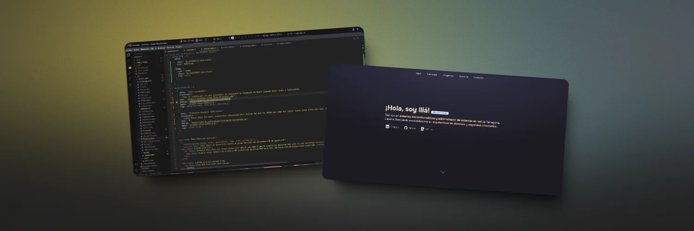

¡Hola, soy Iliá!
¡Buscando trabajo!Técnico en sistemas microinformáticos y administrador de sistemas en red de Tarragona, España. Buscando especializarme en arquitectura de sistemas y seguridad informática.
-
Modelación 3D en Blender y FX
Aprendí y me preparé en creación y manipulación de objetos en 3D, texturización, renderizado y efectos especiales utilizando Blender y otros programas complementarios.
2019 - 2020 | Udemy, Online
-
Sistemas Microinformáticos y Redes
Distinguido con matrícula de honor, obtuve el título de técnico en sistemas microinformáticos y redes. Preparado para el mundo laboral y con competencias en el sector.
2022 - 2024 | Instituto Francesc Vidal i Barraquer
-
Administración de Sistemas Informáticos en Red
Actualmente cursando estudios de grado superior de ASIR, he recibido excelentes comentarios y feedback docente sobre mis competencias clave y desarrollo.
2024 ~ | Instituto Francesc Vidal i Barraquer
Proyectos
Sobre mí
Sobre mí
Me llamo Iliá Briansó, también conocido en internet como dazzayah, soy un técnico en sistemas microinformáticos y administrador de sistemas en red de Tarragona. Empecé en el ámbito de la informática casi sin darme cuenta, ya que desde que tengo uso de razón me gusta trastear con todo tipo de aparatos, desde chipear una Nintendo DS hasta montar mi propio ordenador con 14 años.
He trabajado en varios proyectos, en su gran mayoría personales, y he colaborado con Beep Informática de Reus como técnico de reparación y asistencia técnica.
Me considero una persona bastante curiosa y con todo tipo de inclinaciones a medida que aprendo cosas nuevas, desde la multimedia y el entretenimiento digital hasta la seguridad informática, algo que me fascina cada día más. Actualmente busco certificarme en ciberseguridad y redes, y posteriormente sacarme una carrera de ingeniería informática.